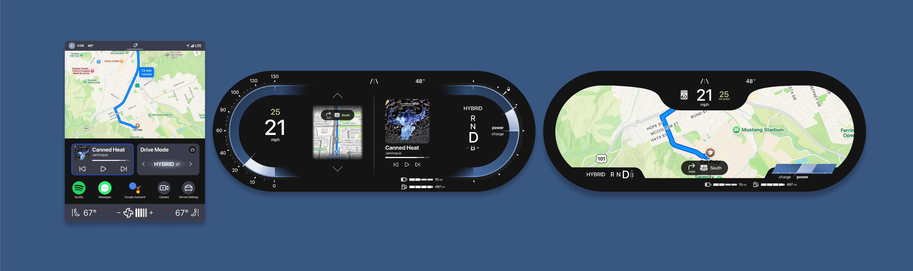
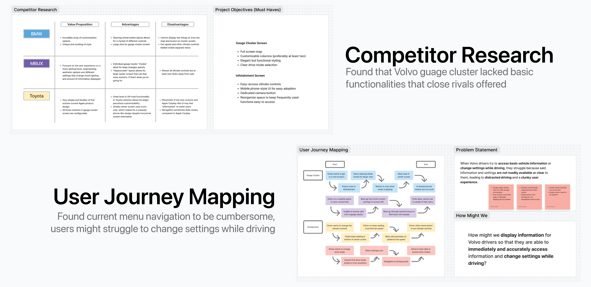
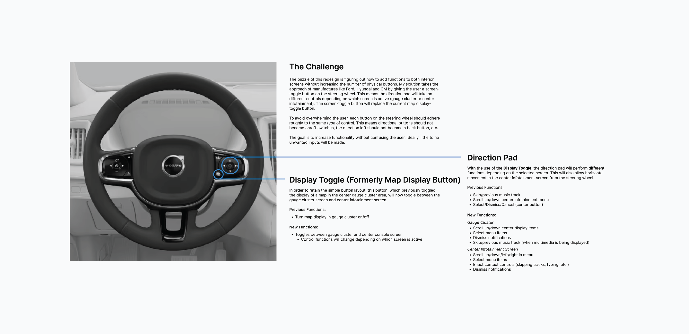
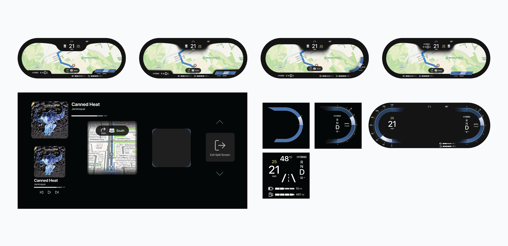
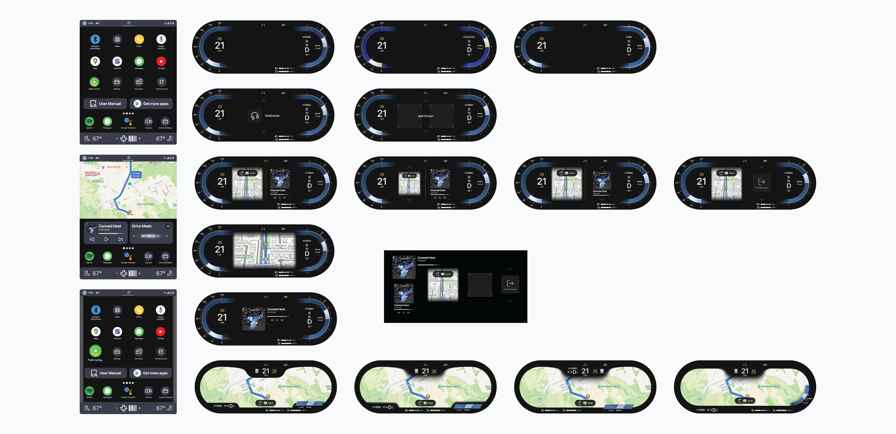
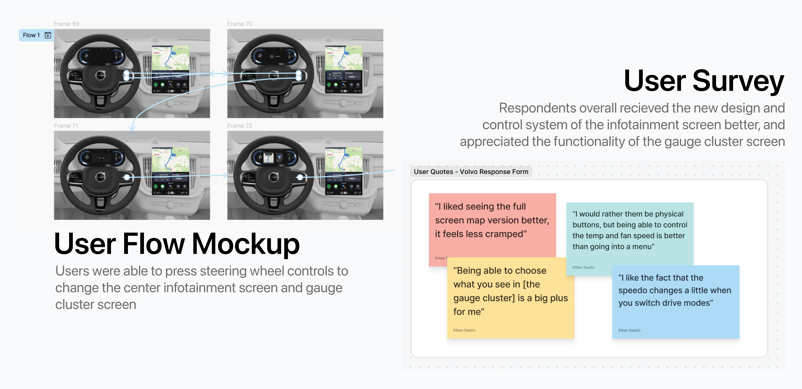
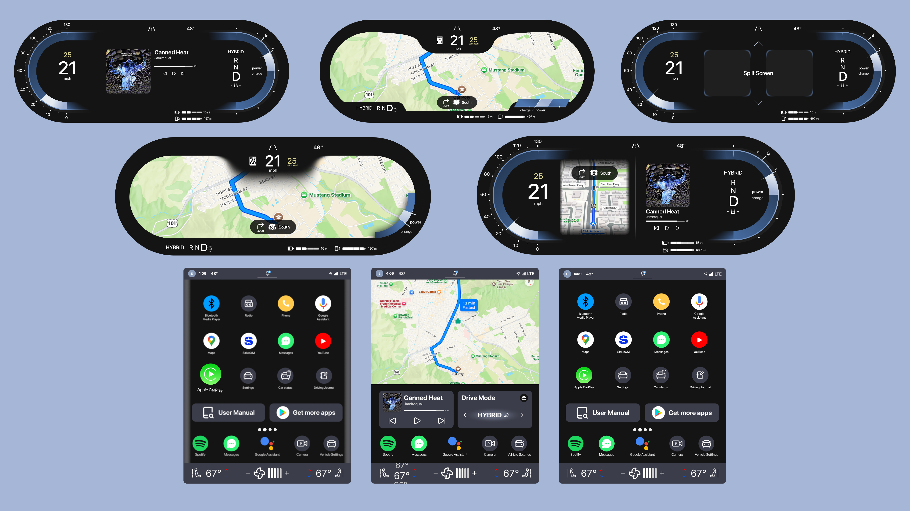

UX Designer
4 weeks
Improved center infotainment screen and redesigned gauge cluster with greater functionality including full screen and split screen displays.
I watch a lot of car reviews to keep up on the latest design trends in infotainment. When watching a review on the 2025 XC60, I was surprised at the limited functionality of their interior screens. I wanted to see what I could do to improve functionality in both the gauge cluster and center infotainment screens without adding complexity to physical controls.
One of the primary goals for any infotainment system should be to convey information to the user in a way that does not interfere with their driving. In order to create a hierarchy of information to guide my design, I started with mapping the user journey.
Additionally, I did competitive research to determine what other brands prioritized in their screens. My research gave me some great initial goals.


Redesign cluster and infotainment layouts for Volvo drivers so that they are able to immediately and accurately access information and change settings while driving.
After preliminary sketches, I started by recreating the current gauge cluster.
Since I planned to give users the ability to display two things at once, I needed to make sure space wasn't going to be an issue. I created multiple versions of each screen element to see what it would look like inside the gauge cluster. I also created the more liminal elements that would be viewed by a driver when modifying their display.

It was very important to me that I represented not only the different display types, but the menus a driver would need to navigate to get there. A driver should be able to scroll through a menu almost subconciously; the driver should not have to split their attention between the road and the interior screens.
Users would also be able to pick up apps and drag them to their homescreen widget or just reorganize them in a style similar to a smart phone. In my opinion, car interiors with large center screens (especially those oriented vertically) should follow the UX of mobile devices since that's already what a user will expect from a touchscreen.

After iterating on my designs for a week, I was happy with my solution. To validate my decisions, I needed to put my design to the test with user research.
In order to properly simulate the operation of a gauge cluster screen, I made a digital version of the steering wheel controls. I had my participants use these controls to navigate the gauge cluster, which I positioned relative to the wheel. I also recreated Volvo's current infotainment system to compare to my own.

With everything in place, I was able to test whether my changes had benefited or detracted from the overal user experience. I used A/B testing to determine which gauge cluster was the most favorable regarding useablility and aesthetics, tested 10 different subjects on their ability to execute basic tasks, then conducted a survey on user's likes and dislikes of the new system. In the end, these were the results:

I was very pleased with the outcome of this project. It's a smaller case study, but it focuses on an area of UX that I'm particularly passionate about.
It was fun to try and navigate user testing for multiple screens that had to be navigated by a separate set of controls. Having to design screens that can be controlled in multiple ways adds a layer of complexity that I appreciate. I also just loved designing the small details of each screen.
Even though Volvo has updated their infotainment screen since the start of this project, I still think I made some very important tweaks, and I certainly improved the functionality of the gauge cluster. As more cars move towards fully digital dashes, I'm excited to see what innovations will look like.
Just from this project alone, I can say I really do enjoy watching people's initial reactions to controls/screen layouts. It's extremely satisfying to see your decisions change how users interact with their car.